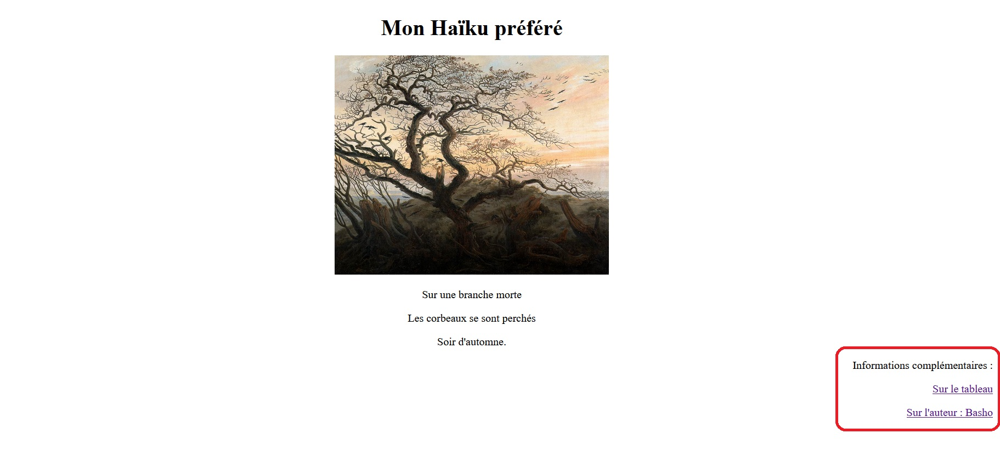

1. Télécharger et sauvegarder dans votre dossier : mes documents/SNT/le web les deux fichiers suivants :
2. Ouvrir le fichier haiku.html avec Notepad++.
Répondez aux questions suivantes sur le document réponse : document réponse langage HTML
3. Identifier l’en-tête de cette page HTML. Combien de ligne compose cet en-tête ?
4. Identifier le corps de cette page HTML :
a. Combien de paragraphe sont déclarés ?
b. Comment le titre est-il identifiable dans ce fichier HTML ?
c. Quel mot-clé permet de donner le nom du fichier de l’image à insérer ?
d. Quel mot-clé permet de donner l’URL à afficher lorsque l’on clique sur le lien ?
e. Quel est l’instruction qui permet de centrer le texte ?
5. Ouvrir ce fichier haiku.html avec un navigateur Firefox :
a. Quelle est la différence de mise en page entre le texte compris dans des balises<h1>et le texte dans des balises<p>?
b. Pourquoi le poème est-il sur trois lignes ?
c. Vers quel site mène le seul lien hypertexte de cette page ?
Modification de la page haiku.html :
Ces liens Hypertextes doivent nous ouvrir une nouvelle page web sur Wikipédia.
Vous mettrez une copie d'écran de votre code (issu de Notepad++) sur le document réponse

Créé avec HelpNDoc Personal Edition: Produire facilement des livres électroniques Kindle
{kind=link}